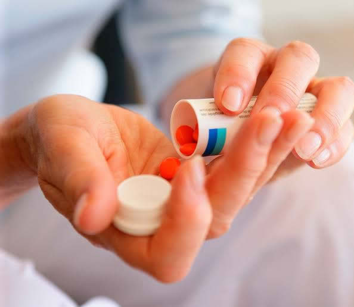
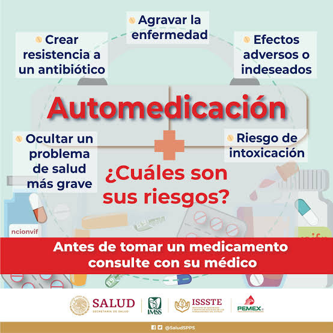

¿Qué es la automedicación?
La automedicación es el acto de consumir medicamentos sin la prescripción o supervisión de un profesional de la salud. Incluye tanto el uso de fármacos para alviar síntomas leves como el consumo de antibióticos o tratamientos más complejos sin una receta médica.
Ejemplo: Tomar paracetamol para el dolor de cabeza sin ir al médico, o usar un antibiótico para una infección sin saber si es bacteriana o viral.

Causas comunes de la automedicación
- Dificultad para acceder a servicios de salud: Ya sea por distancia, falta de tiempo o costos.
- Influencia de familiares o amigos: Recomendaciones sin conocimientos médicos.
- Publicidad y redes sociales: Promueven el uso de ciertos productos como si fueran inofensivos.
- Conocimiento previo de síntomas: Las personas piensan que pueden reconocer una enfermedad por haberla tenido antes.
Riesgos de automedicarse

- Reacciones adversas: Algunos medicamentos pueden causar efectos secundarios graves si se toman mal.
- Resistencia a los antibióticos: Usar antibióticos sin necesidad puede hacer que pierdan su efectividad.
- Enmascaramiento de enfermedades graves: Eliminar síntomas sin tratar la causa real puede empeorar el problema.
- Sobredosis o interacciones medicamentosas: Mezclar fármacos sin control puede ser tóxico.
- Alergias: Algunas personas no saben que son alérgicas a ciertos medicamentos.
Medicamentos comúnmente usados sin receta
- Analgésicos y antipiréticos: Paracetamol, ibuprofeno, ácido acetilsalicílico.
- Antigripales y descongestionantes: Clorfenamina, fenilefrina.
- Antibióticos (aunque requieren receta): Amoxicilina, azitromicina.
- Antiácidos: Omeprazol, ranitidina.
¿Cuándo se debe acudir al médico?
- Cuando los síntomas duran más de 3 días sin mejorar.
- En caso de fiebre alta persistente o dolor intenso.
- Si hay vómito o diarrea constante.
- En presencia de dificultad para respirar.
- Cuando se trata de niños, personas mayores o embarazadas.
Consejos para evitar la automedicación
- Consulta siempre a un médico o farmacéutico.
- No tomes medicamentos recomendados por amigos o familiares.
- Lee las etiquetas y sigue las instrucciones.
- No guardes medicamentos antiguos para usarlos después.
- No uses medicamentos sobrantes de tratamientos anteriores.
Conclusión
La automedicación puede parecer una solución rápida, pero conlleva muchos riesgos para la salud. Consultar a un profesional es siempre la mejor opción.
“Tu cuerpo merece atención médica, no improvisación.”
Continuar: Primeros Auxilios
Continuar: Tipos de Vendajes